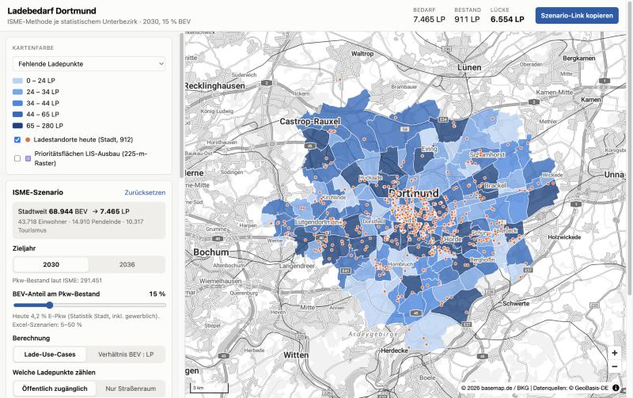

Stadt Dortmund · Challenge 1 · Team brief
How many public charging points does each of Dortmund’s 170 statistical Unterbezirke need, how many exist, and why? Our plan, the data we found, and the prototype we already have.
A frontend-only app works. The Open Data Dortmund API accepts browser requests from any site, groups data on its server, and has outlines for all 170 Unterbezirke. We fetch everything at build time and ship static files, so there is no backend to run.
The gap is vehicle data. Car and EV numbers exist only for the whole city, and population only for 62 statistical districts. We estimate per Unterbezirk until the city hands over its own datasets.
Build a digital tool that calculates and clearly shows where Dortmund needs publicly accessible EV charging points, per statistical subdistrict, and transparently ranks potential areas. Charging points compete for street space with cycle paths, wider pavements and greenery, so the city wants to build only where need is demonstrable.
Every number on the map comes from this chain. Below: the Unterbezirk Eving (122) at the default scenario. The method is our placeholder until the city’s method arrives; it lives in one tested function, so swapping it is a small change.
cars = residents × cars per 1,000 / 1,000 evs = cars × EV share homeShare = clamp(base × (city residents per building / district residents per building) ^ densityEffect, 5 %, 95 %) needed = evs × (1 − homeShare) / EVs per public point gap = max(0, needed − existing points)
Residents per building stands in for private parking: apartment blocks have fewer driveways and garages than detached houses. Today’s EV share is 4.1 % (8,440 BEV + 6,805 PHEV of 372,220 vehicles, 2023); 15 % is a scenario value.

City totals at the default scenario, placeholder method. Missing is summed per district, and districts with more points than needed count as 0, so it is more than needed minus existing.
?ev=20&r=10&ubz=122.Open Data Dortmund has 826 datasets. These are the ones that matter for this challenge. All under dl-de/by-2-0; API console at open-data.dortmund.de.
| Dataset | Level | What it gives us | Status |
|---|---|---|---|
| Unterbezirke fb62-unterbezirke | 170 polygons | Map shapes and the link to statistical district and Stadtbezirk | In use |
| Gebäude fb62-gebaeude | 109,658 points | Buildings per Unterbezirk; population split and density proxy | In use |
| E-Tankstellen NOX-Block fb1-ii-smart-city-e-tankstellen-ladepunkte-nox | 320 points | Existing charging points, tagged with Unterbezirk. NOX project only, in 63 of 170 districts | In use |
| Bevölkerung 2023 ds-bevolkerung-nach-geschlecht-…-2023 | 62 districts | Population (612,065 in total) | In use |
| Kraftfahrzeugdichte and Kfz nach Energiequelle | City | 485 cars per 1,000 residents; EV stock by year | In use |
| Parkplatzsensoren parkplatzsensoren | ~190 sensors | Occupied/free events on EV bays: real charger usage. Only the last ~5 weeks are kept | Next |
| Haltestellen, Parkhäuser, Verkehrszählung | Points | Public transport, off-street parking with live free spaces, 1,109 traffic count points | Next |
| Flächennutzungsplan, B-Pläne | Map layer | Land use; the plan has no data rows, so overlay only | Next |
| Source | Why we want it |
|---|---|
| Bundesnetzagentur Ladesäulenregister | Every public charger in Germany with kW, operator and start date. Completes the NOX-only list. |
| Zensus 2022 grid (100 m) | Population, building types and owner rate. Better population split and private-parking proxy. |
| OpenStreetMap via Overpass | Supermarkets, parking areas and other destinations. |
| StandortTOOL | National demand model from the Nationale Leitstelle Ladeinfrastruktur, to benchmark our numbers. |
| basemap.de | Official German basemap; already the map background. |
| Gap | What we do now | Better fix |
|---|---|---|
| Vehicles No car or EV data below city level | City car density × EV share everywhere | Registrations per Unterbezirk from the city |
| Population 62 districts, not 170 | Split by building count, labelled Estimate | City data or Zensus grid |
| Chargers NOX-Block project only | Shown as is | Merge Bundesnetzagentur register, dedupe within ~20 m |
| Buildings Includes non-residential | Accepted for now | Filter residential (ALKIS / Zensus) |
Pick one, branch with its name, and tick it off in the README with your pull request.
Node.js 20 or newer. The generated data is in the repo, so the app runs without network access to the API.
npm installnpm run devOpens on localhost:5173npm run dataRefreshes public/data/ from Open Data Dortmundnpm testTests for the demand modelPush the repo to GitHub, import it at vercel.com/new. Vercel detects Vite (build npm run build, output dist). No environment variables. Every pull request gets its own preview URL.